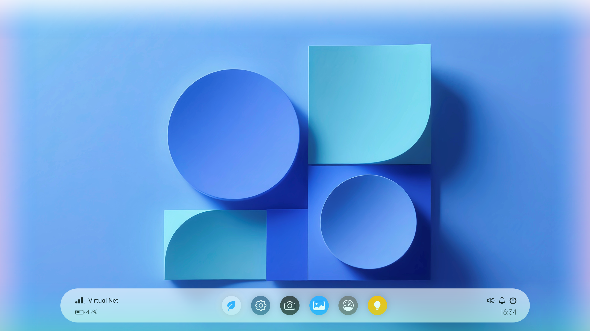

一个基于PowerPoint的伪操作系统
Hello Leaf.
安全防护
内置多层安全防护机制，支持硬件保护、实时扫描等功能。
卓越性能
经过“优化”的系统内核提供卓越性能，即使在低配置设备上也能流畅运行，启动速度快，响应迅速。
Nature智能
系统级 Nature AI 帮助您操作设备、管理文件、进行任务，提供智能推荐和自动化功能。
极简界面
简洁直观的用户界面，提供流畅的多任务体验和无缝的跨设备同步。
强兼容性
Leaf OS 5支持多种硬件平台和设备类型，兼容主流软件和外设，提供丰富生态。
宏支持
内置宏功能，支持联网获取信息，提高工作效率。
Leaf OS 提供直观、美观的用户界面，让您的工作和娱乐更加轻松
系统要求
系统要求
- 处理器: 无限制
- 内存: 2 GB 以上
- 存储空间: 至少需要 32 MB
- 显示: 16:9 分辨率
- 网络: 无硬性要求
支持架构
- x86-64
- ARM64
软件要求
- MS PowerPoint 2019 版本及以上
- 需要信任所有宏
下载最新版本
Leaf OS 5 - BF0
需要Microsoft PowerPoint 2019及以上版本